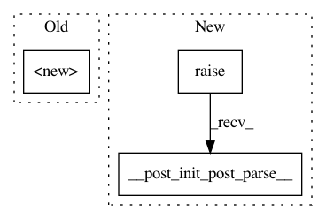

b36faa85bdb442934cb426991237c012e5d3afff,reagent/workflow/model_managers/parametric_dqn_base.py,ParametricDQNBase,__post_init_post_parse__,#ParametricDQNBase#,47
Before Change
eval_parameters: EvaluationParameters = field(default_factory=EvaluationParameters)
def __post_init_post_parse__(self):
super().__init__()
assert (
self.state_preprocessing_options is None
or self.state_preprocessing_options.whitelist_features is None
), (
After Change
eval_parameters: EvaluationParameters = field(default_factory=EvaluationParameters)
def __post_init_post_parse__(self):
super().__post_init_post_parse__()
assert (
self.state_preprocessing_options is None
or self.state_preprocessing_options.whitelist_features is None
), (
In pattern: SUPERPATTERN
Frequency: 4
Non-data size: 3
Instances
Project Name: facebookresearch/Horizon
Commit Name: b36faa85bdb442934cb426991237c012e5d3afff
Time: 2021-02-05
Author: kittipat@fb.com
File Name: reagent/workflow/model_managers/parametric_dqn_base.py
Class Name: ParametricDQNBase
Method Name: __post_init_post_parse__
Project Name: facebookresearch/Horizon
Commit Name: b36faa85bdb442934cb426991237c012e5d3afff
Time: 2021-02-05
Author: kittipat@fb.com
File Name: reagent/workflow/model_managers/discrete_dqn_base.py
Class Name: DiscreteDQNBase
Method Name: __post_init_post_parse__
Project Name: facebookresearch/Horizon
Commit Name: b36faa85bdb442934cb426991237c012e5d3afff
Time: 2021-02-05
Author: kittipat@fb.com
File Name: reagent/workflow/model_managers/actor_critic_base.py
Class Name: ActorCriticBase
Method Name: __post_init_post_parse__
Project Name: facebookresearch/Horizon
Commit Name: b36faa85bdb442934cb426991237c012e5d3afff
Time: 2021-02-05
Author: kittipat@fb.com
File Name: reagent/workflow/model_managers/slate_q_base.py
Class Name: SlateQBase
Method Name: __post_init_post_parse__